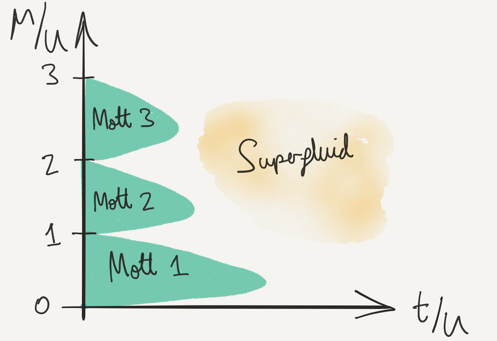

Lattice Models
\[ \DeclareMathOperator{\tr}{tr} \DeclareMathOperator{\E}{\mathbb{E}} \]
Models defined on discrete sites — so-called tight binding models — provide a conceptually simple way to think about the effects of strong interactions between particles. The phenomenology of these models is central to many current avenues of research in condensed matter, whether in solid state or atomic physics.
1 Tight Binding Models
A typical many body Hamiltonian consists of kinetic energy and interaction terms. We haven’t yet had much to say about the situation where the particles additionally feel a potential that could arise from the crystal lattice, or impurity atoms, or both. In this lecture we will be concerned with systems in periodic potentials, so that the noninteracting part of the Hamiltonian is (taking the 1D case for simplicity)
\[ H = \sum_{j=1}^N \left[-\frac{1}{2m}\partial_i^2 +V(x_i)\right] = \int \left[\frac{1}{2m}\partial_x\psi^\dagger\partial_x\psi^{\vphantom{\dagger}}+ V(x)\psi^\dagger\psi^{\vphantom{\dagger}}\right] dx, \]
with \(V(x+a)=V(x)\). As you know, Bloch’s theorem tells us that the eigenstates are labelled by a continuous index \(k\) (crystal momentum) and discrete index \(n\) (band index) and have the form
\[ \psi_{k,n}(x) = e^{ikx} \varphi_{k,n}(x), \tag{1}\]
where \(\varphi_{k,n}\) is periodic. \(k\) lies in the Brillouin zone \((-\pi/a,\pi/a]\). The eigenvalues \(E_n(k)\) give the energy bands.
We are going to be concerned with the case where the lattice potential is very strong, so that the wavefunctions – at least in the lowest bands that we assume are those occupied – are highly localized. The wavefunctions become very small between the minima of the potential. We will see that in this limit we can introduce operators \(a^\dagger_j\), \(a^{\vphantom{\dagger}}_j\) describing particles in these localized states, and that the coupling between neighbouring sites can be captured by the tight binding Hamiltonian
\[ H_t = -t \sum_{j} \left[a^\dagger_ja^{\vphantom{\dagger}}_{j+1}+a^\dagger_{j+1}a^{\vphantom{\dagger}}_j\right], \tag{2}\]
which will play the role of kinetic energy in our models. In fact, we’ve already met such a description, when we described a magnon propagating in a spin chain in Lecture 4.
1.1 Physical Motivation
This subsection is to shed some light on the origin of Equation 2. Feel free to jump to the conclusion.
Let’s think about the form of the Bloch states in a deep 1D lattice in more detail. You know that in a stationary state, the current \(j(x)\) is conserved
\[ j = -\frac{i}{2m}\left[\psi^*(\partial_x\psi^{}) - (\partial_x\psi^*)\psi^{}\right]. \tag{3}\]
Representing \(\psi(x)=\sqrt{\rho(x)}e^{i\theta(x)}\), this can be written
\[ j = \frac{\rho\partial_x\theta}{m}. \]
The Bloch states at non-zero \(k\) carry a current. As we’ve said, away from the minima of the lattice potential, the amplitude of the wavefunction is very small. Thus if \(j\) is constant, \(\partial_x\theta\) must be large. Essentially all of the change in the phase of the wavefunction happens in these regions. Where the wavefunction is larger, its phase is barely changing.
To describe this situation more quantitatively, we use the WKB approximation, which consists in writing the wavefunction in the form
\[ \psi_\text{WKB}(x) = \frac{\alpha}{\sqrt{k(x)}}\exp\left(i\int^ x k(x')dx'\right)+ \frac{\beta}{\sqrt{k(x)}}\exp\left(-i\int^ x k(x')dx'\right), \]
where \(k(x) = \sqrt{2m(E-V(x))}\). In fact, we want to describe the part of the wavefunction with real exponents, where \(k(x) = i\kappa(x)\) because \(V(x)>E\). Substitution into the current Equation 3 gives
\[ j = \frac{1}{m}\text{Im}\, \alpha^*\beta^{}. \tag{4}\]
\(\alpha\) is the amplitude of the wavefunction in the well on the left, and \(\beta\) is the amplitude on the right. By periodicity of the Bloch state, it is only their phase that differs. Call this phase change \(\theta\). In terms of the Bloch states Equation 1 \(\theta=ka\). Then Equation 4 says
\[ j = \frac{|\alpha|^2}{m}\sin\theta. \tag{5}\]
Now the Bloch function \(\varphi_k(x)\) satisfies the Schrödinger equation (we drop the band index)
\[ \left[-\frac{1}{2m}\left(\partial_x + ik\right)^2 + V(x)\right]\varphi_k(x) = E_k \varphi_k(x), \]
where a vector potential has arisen from the phase factor \(e^{ikx}\). By considering a small change \(\Delta k\) as a perturbation we can find
\[ \frac{\partial E_k}{\partial k} = ja, \]
or
\[ \frac{\partial E_k}{\partial \theta} = j. \]
Together with Equation 5 we conclude that the band has the form
\[ E(k)-E(0) = 2t\left[1-\cos ka\right], \]
with some characteristic energy \(t\). Thus we have found
The Bloch states look like a superposition of localized states, with the phase changing abruptly between sites.
The lowest band is sinusoidal.
Confirm that both these features are captured by the tight binding model Equation 2.
2 Bose Hubbard Model
The simplest interacting tight binding model that we can write down is the celebrated Hubbard model.
\[ H = H_t + H_U = -t \sum_{\langle j\,k\rangle} \left[a^\dagger_ja^{\vphantom{\dagger}}_{k}+a^\dagger_{k}a^{\vphantom{\dagger}}_j\right] + \frac{U}{2}\sum_j \mathsf{N}^{\vphantom{\dagger}}_j(\mathsf{N}^{\vphantom{\dagger}}_j-1), \]
where \(\mathsf{N}^{\vphantom{\dagger}}_j=a^\dagger_ja^{\vphantom{\dagger}}_j\) is the number operator for site \(j\), and the sum in the first term is over all nearest neighbour pairs on some lattice (e.g. square or cubic). The on-site interaction term \(\mathsf{N}^{\vphantom{\dagger}}_j(\mathsf{N}^{\vphantom{\dagger}}_j-1)\) is just what we have been writing as \(a^\dagger_ja^\dagger_ja^{\vphantom{\dagger}}_ja^{\vphantom{\dagger}}_j\) previously. In 1D, you can think of this as the lattice version of the Lieb–Liniger model, in that in involves a kinetic term (sometimes called the hopping term) and a short-ranged interaction.
The Hubbard model was first introduced to describe electrons in solids. In that case the particles are fermions, and we have to deal with their spin. We’ll come to this Fermi Hubbard model shortly. In this section we are going to discuss the more straightforward Bose Hubbard model introduced in {% cite Fisher:1989aa %}. These authors had in mind applications to liquid He\(^{4}\) on a substrate or granular superconductors in which the Cooper pairs (more on those later) approximate interacting bosons. However, ten years after its invention, the model found its natural home in the description of bosonic atoms confined to optical lattices.
2.1 The Mott State
In analyzing a new model we always begin by asking what happens when each of the terms in the Hamiltonian dominate the others. This allows us to get the lie of the land, and think about how these different limits may fit together.
For the Bose–Hubbard model, we start by taking \(U/t\to\infty\) The eigenstates are then states of definite occupation number, with energy
\[ E(\mathbf{N}) = \frac{U}{2} \sum_j N_j(N_j-1). \]
To find the ground state at fixed particle number, we should try filling the \(N_\text{sites}\) sites as uniformly as possible. This is easy if the filling \(\nu \equiv N_{\text{particles}}/N_\text{sites}\) is integer. Otherwise, denote by \(\lfloor \nu\rfloor\) the largest integer less than \(\nu\), and \(\lceil \nu\rceil\) the smallest integer larger than \(\nu\). Then the number of sites with occupancy \(\lceil \nu\rceil\) is \(N_\text{sites}\left(\nu - \lfloor \nu\rfloor\right)\). The ground state energy has a piecewise linear dependence on \(\nu\)
\[ \frac{E_0}{N_\text{sites}} = \left(\nu - \lfloor \nu\rfloor\right)e(\lceil \nu\rceil) + \left(\lceil \nu\rceil - \nu\right)e(\lfloor \nu\rfloor), \]
where \(e(N) = \frac{U}{2}N(N-1)\). As the result the chemical potential \(\mu = \frac{\partial E_0}{\partial N_\text{particles}}\) is piecewise constant, with jumps occurring when \(\nu\) is integer:
\[ \mu = e(\lceil \nu\rceil) -e(\lfloor \nu\rfloor)=U\lfloor \nu\rfloor, \]

If we think about varying the chemical potential instead, all values between \(UN\) and \(U(N-1)\) correspond to integer filling \(\nu=N\). The states of integer filling are named Mott states, after Nevill Mott. Mott’s realization was that when interactions dominate the hopping, the formation of such states can cause insulating behaviour, even when band theory implies a system should be a metal.
2.2 The Effect of Hopping
For these states to be physically significant, they must survive when we turn \(H_t\) back on. If the hopping is small, we can think of it as a perturbation. The unperturbed eigenstates of the model have a fixed occupation \(N_j\) on site \(j\)
\[ \lvert{\mathbf{N}}\rangle = \bigotimes_j \lvert{N_j}\rangle_j. \]
Applying \(H_t\) to such a state gives a superposition of states, each with one particle moved from one site to an adjacent site.
How is a Mott state (all sites with the same occupation) changed by \(H_t\) in first order perturbation theory?
Let’s now consider a Mott state of filling \(\nu=N\) with one extra particle added. We now have \(N_\text{sites}\) degenerate ground states when \(t=0\), corresponding to placing the extra particle on each lattice site. \(H_t\) mixes these states together: we have a problem of degenerate perturbation theory. All other states are separated from these lowest states by energies of order \(U\).
The states in the ground state multiplet are
\[ \lvert{i,+}\rangle\equiv \frac{a^\dagger_i}{\sqrt{N+1}}\bigotimes_{j} \lvert{N}\rangle_j. \]
Evidently, only states corresponding to adjacent \(j\) are coupled by \(H_t\). These matrix elements are
\[ \langle{j}\rvert H_t \lvert k \rangle = -t(N+1). \]
Thus within the ground state multiplet \(H_t\) corresponds to a tight binding model
\[ H_t\rvert_{+} = -t(N+1) \sum_{\langle j\,k\rangle} \left[\lvert{j,+}\rangle\langle{k,+}\rvert+\text{h.c.}\right]. \tag{6}\]
This is a very simple picture: the only many body effect is the factor of \(N\) due to Bose statistics. The splitting of the degenerate states by \(H_t\) is then given by the tight binding dispersion
\[ \omega_+(\boldsymbol{\eta}) = -2t(N+1)\sum_{n=1}^d\cos\eta_n \tag{7}\]
(in \(d\)-dimensions). We could alternatively remove a particle from the Mott state
\[ \lvert{i,-}\rangle\equiv \frac{a^{\vphantom{\dagger}}_i}{\sqrt{N}}\bigotimes_{j} \lvert{N}\rangle_j. \]
Within these states, \(H_t\) takes the form
\[ H_t\rvert_{-}=-tN \sum_{\langle j\,k\rangle} \left[\lvert{j,-}\rangle\langle{k,-}\rvert+\text{h.c.}\right], \tag{8}\]
with a spectrum
\[ \omega_-(\boldsymbol{\eta}) = -2tN\sum_{n=1}^d\cos\eta_n. \]
Let’s see how these considerations change the picture of the previous subsection. We introduce the grand canonical Hamiltonian
\[ \mathcal{H}_\mu = H - \mu N_\text{particles}, \]
and consider the ground state as a function of \(\mu\). At \(t=0\) the energies of the Mott states with filling \(\nu=N\) are
\[ \frac{\mathcal{E}^{(N)}_\mu}{N_\text{sites}} = \frac{U}{2}N(N-1)-\mu N. \]
\(\mathcal{E}^{(N)}_\mu\) and \(\mathcal{E}^{(N+1)}_\mu\) become degenerate when \(\mu=UN\) for \(t=0\). Let’s compare this with the ground state with one extra particle on top of the \(N\) Mott state. This state corresponds to a particle at the bottom of the tight binding band. From Equation 7, we see that the ground state energy of the tight binding model is \(-2td(N+1)\). Together with extra energy of interaction we have overall
\[ \mathcal{E}^{(N)}_\mu + UN - \mu -2dt(N+1). \]
We see that for \(t>\frac{UN-\mu}{2d(N+1)}\) the state with an extra particle actually has a lower energy: the Mott state is not the ground state. Similarly, the energy of the ground state with one ‘hole’ in the \(N+1\) Mott state is
\[ \mathcal{E}^{(N+1)}_\mu - UN + \mu -2dt(N+1). \]
Introducing a hole is thus favoured for \(t>\frac{\mu-UN}{2d(N+1)}\).

This analysis applies only at small \(t/U\). What happens in the regions where the Mott states are not the ground states, and there are excess bosonic particles or holes that are free to move? If we let \(t/U\to\infty\) we have a Bose condensate: all the particles can sit in the \(\eta=0\) Bloch state. When interactions are finite but small, we will see in the next lecture that the result is a superfluid. The boundaries that we have have found can be connected (drawing freehand – see Problem Set 2 for a variational approach) to give the following phase diagram for the ground state of the Bose–Hubbard model.

Note the diminishing size of the Mott lobes, a consequence of the enhanced hopping in the effective tight binding models Equation 6 and Equation 8 as we go to higher filling.

3 Fermi Hubbard Model
Now we turn to the case of fermions, the context in which the Hubbard model was originally introduced. Allowing for spin, the model is usually written.
\[ H=-t \sum_{\substack{\langle j\,k\rangle\\ s=\uparrow,\downarrow}} \left[a^\dagger_{j,s}a^{\vphantom{\dagger}}_{k,s}+a^\dagger_{k,s}a^{\vphantom{\dagger}}_{j,s}\right] + U\sum_j N_\uparrow N_\downarrow, \]
We could of course add spin to the Bose Hubbard model, but it’s still interesting without it. By contrast, we need spin here to have an interacting model. It’s hard to overstate the importance of this model in condensed matter physics because of the role that it has played in attempts to understand the high-temperature superconducting materials known as cuprates. The 2D model has long been argued to capture the physics of strong correlations in the CuO\(_2\) layers that form the backbone of these materials. ‘Capture the physics’ would ideally mean that the ground state of the model is superconducting. This is still a controversial issue: some believe that the Hubbard model suffices, if only we could learn enough about its behaviour; others that it is missing some ingredient – other bands, coupling between layers, phonons – that is vital to superconductivity.
Relatively little is known for sure about the Hubbard model, except in 1D, where it can be solved exactly using the Bethe ansatz. You may be wondering why it’s so much harder than the Bose case. Let’s find out…
3.1 Two Sites, Two Fermions
As in the Bose case, we start by thinking about \(U/t\to\infty\). In the limit we get Mott states: only three this time, corresponding to 0, 1, or 2 particles per site. Two particles on a site are described by \(a^\dagger_{j,s}a^\dagger_{j,s'}\lvert{\text{VAC}}\rangle\), which is antisymmetric in the spin indices due to anticommutation of the creation operators, and therefore describes a spin singlet \(\frac{1}{\sqrt{2}}\left[\lvert{\uparrow}\rangle\lvert{\downarrow}\rangle-\lvert{\downarrow}\rangle\lvert{\uparrow}\rangle\right]\). When we have only 1 per site (We call this half filling), we can have either spin. Thus the \(\nu=1\) Mott state is massively degenerate, with a ground state multiplet consisting of \(2^{N_\text{sites}}\) possible spin configurations. \(U/t\to\infty\) is therefore a rather singular limit, and to understand the true ground state at large \(U\) we’ll need to work bit harder.
Start by thinking about two sites and two particles. There are 6 states altogether in the Hilbert space.
\[ \begin{align} a^\dagger_{1,\uparrow}a^\dagger_{1,\downarrow} \lvert{\text{VAC}}\rangle,\quad a^\dagger_{2,\uparrow}a^\dagger_{2,\downarrow} \lvert{\text{VAC}}\rangle\\ a^\dagger_{1,s}a^\dagger_{2,s'} \lvert{\text{VAC}}\rangle,\quad s,s'=\uparrow,\downarrow. \end{align} \]
The top two states have energy \(U\) when \(t=0\); the bottom 4 have energy 0.
[Try this before continuing!] How does the degeneracy of these states get lifted at finite \(t\)? Try writing down the Hamiltonian restricted to these states.
3.2 Effective Hamiltonian
As the number of sites increases, it becomes harder to say what happens to the ground state multiplet. We now modify our strategy by splitting the problem in two: we are going to find an effective Hamiltonian that acts only on the half filled Mott states and describes their splitting when \(t/U\) is finite but small. Whether we can subsequently solve that Hamiltonian we leave until later.
As I’m sure you realized when you thought about two sites, this is a qualitatively different degenerate perturbation problem than the one we solved when we added a single particle or hole to the bosonic Mott states. The reason is that \(H_t\) has no matrix elements among the degenerate states: when acting on one of them it always takes us into a state with one site doubly occupied and the neighouring site empty. We have to think about second order degenerate perturbation theory to find out what happens. To handle this we divide the Hamiltonian into block form, according to whether its matrix elements act on the Mott state or not.
\[ H = \begin{pmatrix} H_{\text{Mott}} & V^{} \\ V^\dagger & H_\text{Not} \\ \end{pmatrix} \]
Denoting by \(P_\text{Mott}\) the projection operator on to the \(2^{N_\text{sites}}\) Mott states, and \(P_\text{Not}\equiv 1-P_\text{Mott}\), we have
\[ \begin{align} H_\text{Mott}= P_\text{Mott} H P_\text{Mott},\quad H_\text{Not}= P_\text{Not}H P_\text{Not}\\ V^{} = P_\text{Mott} H P_\text{Not},\qquad V^\dagger = P_\text{Not} H P_\text{Mott}. \end{align} \]
In the case of the Hubbard model, we have
\[ \begin{align} H_\text{Mott}= P_\text{Mott} H_U P_\text{Mott},\quad H_\text{Not}= P_\text{Not}H_U P_\text{Not}\\ V^{} = P_\text{Mott} H_t P_\text{Not},\qquad V^\dagger = P_\text{Not} H_t P_\text{Mott}. \end{align} \]
We write the eigenvalue equation in block form
\[ \begin{pmatrix} H_{\text{Mott}} & V^{} \\ V^\dagger & H_\text{Not} \\ \end{pmatrix} \begin{pmatrix} \lvert{\Psi}\rangle\\ \lvert{\Phi}\rangle \end{pmatrix} = E \begin{pmatrix} \lvert{\Psi}\rangle\\ \lvert{\Phi}\rangle \end{pmatrix}. \]
We eliminate \(\lvert{\Phi}\rangle\) to obtain
\[ \left[H_{\text{Mott}} -V^{}\left(H_\text{Not}-E\right)^{-1}V^\dagger\right]\lvert{\Psi}\rangle = E\lvert{\Psi}\rangle. \]
So far we have made no approximation. While this looks like an eigenvalue equation, we can’t yet interpret the operator in the square brackets as an effective Hamiltonian because it depends on the eigenvalue \(E\). However, we now focus on energies much smaller than the eigenvalues of \(H_\text{Not}\), which are \(O(U)\). In this way we can neglect this energy dependence and arrive at the effective Hamiltonian acting only on the Mott state
\[ H_\text{eff} = H_{\text{Mott}} -V^{} H^{-1}_\text{Not}V^\dagger. \]
What form does \(H_\text{eff}\) take? \(H_{\text{Mott}}=0\), and \(V^\dagger\) creates states with an adjacent hole and doublon (doubly occupied site). \(H_\text{Not}\) acting on these states is just \(U\), and \(V\) has to remove the hole and doublon. Thus,
\[ H_\text{eff} = -\frac{V^{}V^\dagger}{U} = -\frac{t^2}{U} \sum_{\substack{\langle j\,k\rangle\\s,s'}} \left[a^\dagger_{j,s}a^{\vphantom{\dagger}}_{k,s} a^\dagger_{k,s'}a^{\vphantom{\dagger}}_{j,s'}+j\leftrightarrow k\right]. \]
We can write this in a more familiar way by first reordering the operators (not forgetting the anticommutation relations!)
\[ a^\dagger_{j,s}a^{\vphantom{\dagger}}_{k,s} a^\dagger_{k,s'}a^{\vphantom{\dagger}}_{j,s'} = -a^\dagger_{j,s}a^{\vphantom{\dagger}}_{j,s'}a^\dagger_{k,s'}a^{\vphantom{\dagger}}_{k,s} + \delta_{s^{}s'}a^\dagger_{j,s}a^{\vphantom{\dagger}}_{j,s'}, \]
and then using the identity
\[ \delta_{ab}\delta_{cd} = \frac{1}{2}\left[\boldsymbol{\sigma}_{a d}\cdot \boldsymbol{\sigma}_{c b} + \delta_{ad}\delta_{cb}\right]. \]
Finally, in \(d\) dimensions (\(d=1\), chain; \(d=2\) square lattice; \(d=3\) cubic lattice) we get
\[ H_\text{eff} = -\frac{dN_\text{sites}t^2}{U}+J\sum_{\langle j\,k\rangle} \mathbf{s}_j\cdot \mathbf{s}_k \label{FilledHeff} \]
with \(J=\frac{4t^2}{U}\) and
\[ \mathbf{s}_j=\frac{1}{2}\sum_{s,s'}a^\dagger_{j,s}\boldsymbol{\sigma}_{s^{}s'}a^{\vphantom{\dagger}}_{j,s'}. \]
The effective Hamiltonian is nothing but the spin-1/2 antiferromagnetic Heisenberg model!
Note that there is something slightly sly about this derivation. We assumed that the energy scale \(U\) was the largest scale in the problem, in order to arrive at the effective Hamiltonian. However, typical excited state energies of the Heisenberg Hamiltonian are \(\frac{N_\text{sites}t^2}{U}\). Thus for \(N_\text{sites}\gtrsim \left(\frac{t}{U}\right)^2\) there isn’t actually a separation between these two energies. Not a very useful condition! Physically, it’s enough to have a small density \(n\) of doublons and holes, with overall energy \(\sim nU\), when \(t/U\) is small.
3.3 Doping
Antiferromagnetism and the Mott phenomenon are seen to go hand in hand in fermion systems. This explains the common ocurrence of antiferromagnetism in transition metal compounds, especially oxides. The cuprate superconductors mentioned earlier are a famous example.
At half filling, the cuprates are antiferromangetic Mott insulators. Superconductivity emerges when the materials are doped by changing their stoichiometry. This introduces electrons or holes into the CuO\(_2\) planes that are modeled by the Hubbard Hamiltonian. Antiferromagnetic order is believed to be destroyed by freely moving holes – think how the Néel ordering is disrupted – and indeed superconductivity appears where antiferromagnetism dies. The precise relationship between the two phenomena is – like much of the physics of the cuprates – not clear.
An effective Hamiltonian that describes the doped Mott insulator is the t-J model
\[ H_\text{eff} = -t \sum_{\substack{\langle j\,k\rangle\\ s=\uparrow,\downarrow}} \left[a^\dagger_{j,s}a^{\vphantom{\dagger}}_{k,s}+a^\dagger_{k,s}a^{\vphantom{\dagger}}_{j,s}\right] + J\sum_{<j\,k>}\left[\mathbf{s}_j\cdot \mathbf{s}_k - \frac{N_j N_k}{4}\right]. \tag{9}\]
The term involving \(N_j N_k\) keeps track of the need for both sites to be occupied in the derivation of the effective coupling (c.f. it’s just the “constant” term in Equation 9. The hopping term means that holes or doubly occupied sites can move through the lattice, with the Heisenberg exchange term only acting between sites with one particle, since the operators \(\mathbf{s}_j\) vanish when they act on an empty or doubly occupied site.